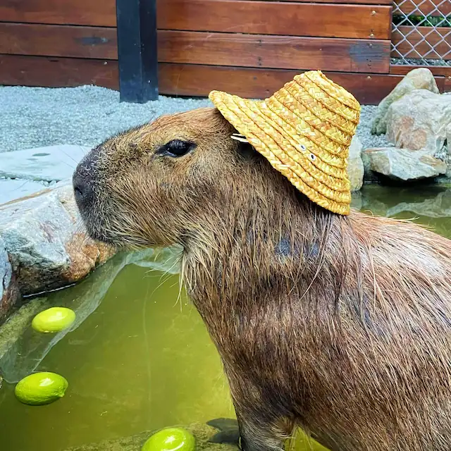

We love these little guys – and you should, too!
As it turns out, the largest rodent in the world also has the most chill. It will get along with almost any animal it comes across, which it why it has numerous ‘Animals Sitting on Capybaras’ blogs dedicated to it.
They spend most of their lives chilling in the grasslands and nearby bodies of water. Since they live in groups of 10-20, it’s kinda like the wild animal version of an office water cooler. And maybe they’re not fluffy or cuddly — more coarse and wiry — but they do look like they’d be really good listeners.